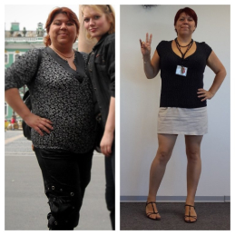

Капли для похудения Fortunella использовала впервые. долгое время пыталась
сбросить вес с помощью диеты и спорта
12
+
ДОСТОИНСТВА
Результаты были не очень. За месяц уходило не больше 5 кг, но возвращалось больше, чем
теряла, когда начинала нормально
питаться. Поэтому решила поэкспериментировать с этими каплями, которые состоят из растительных
компонентов и веществ,
направлены на сжигание накопленного жира и того жира, что мы получаем вместе с едой. Не
знала, кстати, что есть жиры
скрытые. Их тоже поглощаем во время еды и полнеем.
В составе бада перцы, хром и многое другое. При желании каждый может найти в интернете исследования,
которые проводились
с форсколином, биоперином, пиколинатом хрома. Именно эти компоненты входят в состав капель для похудения.
Например,
форсолин по результатам исследований ученых подтвердил эффективность при сжигании жира. Также это вещество
ускоряет
метаболизм. Мне эффект нравится! Вес уходил в течение 2-4 недель безопасно и достаточно
медленно — итог минус 6 кг.
Эффект будет заметен не сразу. Закапываю капли по инструкции. Стараюсь не взвешиваться каждый
день, так как это нервирует и
вес может колебаться даже от выпитого стакана воды. За 2 недели применение ушло 3 кг.
Спортом в это время
не занималась.
Мне нужно похудеть ещё как минимум на 5 кг, чтобы можно было начать бегать и выполнять какие-то упражнения
с нагрузкой
на ноги и позвоночник. Поэтому продолжаю худеть с этим средством, только думаю когда перейду на умеренные
физические
нагрузки эффект будет еще заметнее.
-
МИНУСЫ
Дизайн не очень понравился xD но это не главное
Ирина Митрофанова
Репутация
+5432
Тверь, Россия
Капли для похудения Fortunella можно отнести к натуральным и безопасным
благодаря хорошему составу, в котором нет никакой
вредной химии
34
+
ДОСТОИНСТВА
На себе испробовала действие этого средства. исходный вес был 75 кг при росте 1 м 65 см.
Никаких побочных эффектов не
было. В первый день появились небольшие прыщики на лице, но не связываю это с приемом капель. В первую
очередь меня
подкупил отличный состав капель: биоперин, гвинейский и кайенский перец, экстракт оливкового листа,
пиколинат хрома и
форсколин. Все эти компоненты активизируют обмен веществ и выполняют функцию липолитиков, то есть они
сжигают жир.
За первую неделю сбросила всего 1 кг. сначала расстроилась, но решила продолжить принимать капли.
Уходить вес потом
стал быстрее, когда каждый вечер делала лёгкую гимнастику и качала пресс.
-
МИНУСЫ
Все понравилось, ниже доказательства )
Лена Л.
Репутация
+987
Пенза, Россия
Подошла к подбору средства для похудения с толком, расстановкой. Спойлер: не прогадала
65
+
ДОСТОИНСТВА
Когда увидела в составе капель гвинейский и кайенский перец, немного
испугалась. Но потом
посмотрела на авторитетных
сайтах, что как раз эти перцы ускоряют метаболизм и сжигает жиры. Поэтому собственно их и используют даже
спортсмены,
которые находятся на сушке. Думаю, что именно из-за сидячего образа жизни после 30 лет сильно замедлился
обмен веществ.
Очень рассчитывала на эти капли!! Не прогадала — с 78 похудела до 7 за 1,5 месяца. Ура!
-
МИНУСЫ
Баночка быстро кончается, нужно заказывать сразу 2
Дарья Гришина
Репутация
+1643
С-Петербург, Россия
На приёме у эндокринолога спросила про пиколинат хрома и другие вещества из состава этих
капель
42
+
ДОСТОИНСТВА
Хром как сказал врач используют отдельно для нормализации глюкозы, холестерина и уровня
жиров. Вещество хорошо
корректирует обмен веществ и снижает аппетит. Когда задала все вопросы врачу и убедилась в безопасности
состава, начала
принимать Fortunella в каплях. Контрольный вес составлял 90 кг. Это очень много для моей
комплекции.
Пополнела можно
сказать внезапно, когда сменила работу и перешла на сидячий образ жизни. Капли хорошо снимают волчий
аппетит: я стала
наедаться меньшими порциями. Никаких побочных эффектов не было. Сейчас идет третья неделя приема. За этот
период ушли 7
кг. считаю что это просто отличный результат, если не было интенсивных нагрузок. Но плюс я ещё
ограничивала себя в
питании. С каплями это было сделать намного проще, чем раньше когда я просто сидела на
диете и сильно
психовала. Эти
капли не дают тревожности от ограничений в питании. Диету соблюдать достаточно легко.
Кроме того
почувствовала прилив
сил, сало успевать сделать намного больше, чем, к примеру, за несколько выходных.
-
МИНУСЫ
Не нашла
Светлана Жданова
Репутация
+87
Москва, Россия
Хром очень важен худеющим. Он сжигает калории особенно при физических нагрузок
4
+
ДОСТОИНСТВА
Это заметно облегчает похудение. Кроме того хром использует при инсулинорезистентности, о
которой многие даже не
догадываются. Это состояние нередко приводит к сахарному диабету и является такой невидимой причиной
резкого набора
веса. В БАДЕ Fortunella есть хром.
Эндокринолог посоветовал использовать также метформин. Он как раз не дает усваиваться лишней глюкозе и
предупреждает
нежелательный набор веса. Пиколинат хрома отбивает тягу к сладкому. Проблема была в том,
что я ела именно
много
сладостей, заедала какие-то стрессы и проблемы. Привыкла постоянно что-то жевать вкусное и сладкое.
Поэтому на фоне
ограничение движений вес стал активно расти. В этих каплях нравится то, что похудение
нерезкое, но
достаточно
заметное. Решила взвешиваться раз в неделю. Так вот за 7 дней употребления при незначительных ограничениях
в питании (не
ела поздно вечером и перестала объедаться сладостями) похудела на 3 кг. А потом за месяц на 15
Также в состав капель входит биоперин. В инструкции указано, что есть именно это вещество.
Оно эмульгирует
жиры и
выполняет роль как бы жиросжигателя. Получают его из чёрного перца. В каплях есть ещё
кайенский перец,
гвинейский
перец. Эти вещества очень полезны для обмена веществ, тем более в среднем возрасте, когда метаболизм у
многих
замедляется.
Принимала разные средства и растительные и химические и достаточно опасные, которые
запрещены в Европе, но у нас до сих
пор продают в аптеках. Результат был довольно хороший, но вес быстро возвращался обратно. Постоянно
мониторила разные
формы и наткнулась именно на эти капли для похудения Fortunella. Решила тоже попробовать. На
удивление
никаких побочек.
Даже не было бешеного сердцебиения, хотя в составе есть жгучие перцы. Поразилась что достаточно легко
ограничила в
рационе пироженки и конфеты, перестала пить сладкую газировку. Теперь совсем не тянет на продукты с
сахаром. Огромное
спасибо производителю за это дополнительное действие!
-
МИНУСЫ
-
Оксана
Репутация
+45322
Выборг, Россия
Хорошие капли для похудения.
12
+
ДОСТОИНСТВА
Люблю пробовать всё новое, но сначала пересматриваю кучу отзывов и форумов. После родов
резко прибавила 10 кг. Пробовала
народные средства, изнуряла себя тренажерах, но эффект не устраивал. Капли burn МТ
отличные, просто идеальные для
меня, так как совершенно нет времени на рассовывание еды по контейнерам и есть по часам тоже не могу из-за
сильной
занятости. Но всё-таки одних капли для выраженного похудения, думаю, будет недостаточно.
Буквально хватит 20 минут для
пробежки или прогулки быстрым шагом. Заметила, что капли повышают работоспособность и действительно
хочется двигаться.
Я меньше устаю на работе, нахожу время на активные игры с ребенком, походы по магазинам и в кинотеатр.
Результатом очень
довольна! Приём капель пока продолжу, думаю, не буду прекращать еще как минимум месяц.
Потеря веса на сегодня составляет
7 кг.
До 35 лет не было особых проблем с лишним весом. Но потом словно перевернулась что-то, даже
при обычном питании лезли
лишние килограммы. Даже пришлось идти к диетологу, сдавать анализы у эндокринолога, но с гормонами было
всё в порядке.
Сказали, что просто предклимакс. Пищеварение тоже как-то ухудшилось. Именно хотела растительное средство,
чтобы сразу
решить все эти проблемы.
Капли очень хорошие именно своим составом. В нём есть компоненты как для похудения, так и
для восстановления кровотока
в кишечнике и повышения обмена веществ. Со многими подругами говорила, и они тоже заметили, что стали
быстрее
поправляться после 40 лет. Я лично связываю это с возрастными изменениями, когда замедляются внутренние
процессы и нужно
принимать именно что-то стимулирующее обмен веществ. Сейчас капли уже не принимаю. После месяца решила
сделать перерыв
на лето. Посмотрю, как будет держаться вес. Зимой планирую снова начать прием, чтобы мне больше не
набирать лишние
килограммы.
-
МИНУСЫ
Хотелось бы элегантнее упаковку

Зина Юркова
Репутация
+453
Самара, Россия
После вторых родов прицепились лишние 10 кг.
43
+
ДОСТОИНСТВА
Для меня это было неожиданно, потому что привыкла иметь стройную фигуру. Сразу решила
приводить себя в форму с помощью
спорта и диеты. Но чувствовала сильную слабость и бросила из-за снижение активности и неспособности
заниматься ребёнком.
Стала искать растительные комплексы. По отзывам нашла бад Fortunella . Посмотрела
характеристики каждого компонента в
составе, вроде безопасно должно быть. За первые 2 недели удалось скинуть 2 килограмма. Маловато, но у меня
вес всегда
уходит медленно. На третьей неделе похудела еще на 2 кг. Нравится то, что изменения именно
внешние прямо такие явные.
Окружающие замечают и спрашивают, где я так быстро похудела и отчего похорошела. Жир уходит в основном с
живота и боков.
Это самые проблемные места для меня. Перед применением обязательно посмотрите полный состав. Есть
форсколин, который
снижает процент жира в теле, но также может понижать давление. Обращайте внимание на такие вроде бы
незначительные
особенности средства.
-
МИНУСЫ
искала, не нашла
Марина
Репутация
+22
Мыт, Россия
Капли Fortunella купили вместе с подругой.
12
+
ДОСТОИНСТВА
Привлекла конечно доступная цена. До этого выкинули немало денег на разные препараты,
разрекламированные, но которые
оказались пустышками. Поэтому одну упаковку на двоих и взяли. В составе много всего хорошего: форсколин,
хром, перец,
биоперин. Считаю, что эффект похудения наступает именно из-за комплексного действия этих веществ.
Изначально мой вес был 70 кг, а у подруги 73. За первые три дня я ничего не сбросила, а подруга скинула
килограмм.
Активное похудение пошло именно в конце первой недели. Скинули сразу по 3-4 кг. Тогда и поняли, что
средство реально
работающее и заказали уже на полный курс на двоих. Продолжаем худеть. Огромное спасибо производителю за
такую добавку,
которая и эффективна и при этом не вредит здоровью!
-
МИНУСЫ
-
Людмила К.
Репутация
+565
Иваново, Россия
Для меня состав капель показался каким-то необычным и наверное слишком простым.
7
+
ДОСТОИНСТВА
Подумала, что перец и экстракт оливок, другие компоненты, включая биоперин и форсколин
окажутся ерундовыми. Единственно
читала много хорошего о хроме, который помогает похудеть и перестать объедаться сладостями. Но решила
всё-таки
попробовать, хотя сомнения были — и большие. Рацион никак не меняла специально, чтобы реально оценить как
работает это
средство. Потому что на диетах и спорте уже пробовала худеть. Но всегда хотелось более простого способа.
Была очень
удивлена тем, что капли действительно помогают худеть. Причём, ни как обычная диета, когда уходит грудь,
лицо
становится слишком худым и заостренным. У меня на этих каплях худели именно места, где была жировая
ткань. Это бёдра,
живот и ягодицы.
Дополнительно отмечу то, что средство помогает легче переносить нагрузки, нет такой сильной усталости в
конце дня. Мне
захотелось реально восстановить заброшенные тренировки, хотя в этот период был сильный завал на работе.
Вес уходит
именно постепенно — это является как бы гарантией того, что килограммы не вернуться быстро при нормальных
ограничениях в
еде и удастся сохранить достигнутый результат очень долго. Месяц применение капель мне подарил отвес в5
кг. Кожа не
повисла нигде. Никакой слабости. Из рациона легко исключила булки, хлеб, картошку, все сладости.
-
МИНУСЫ
-
Людмила
Репутация
+565
Москва, Россия
Отличное средство для тех, кто занят работой и не имеет возможности или здоровья для
постоянных
занятий спортом.
11
+
ДОСТОИНСТВА
В составе бада нет никаких опасных химических продуктов, поэтому считаю, что можно
применять
капли регулярно, но нужно
делать перерыв в несколько месяцев. Цена очень приемлемая. Никаких побочных реакций не заметила. В первые
дни
совсем не
худела. Думаю, что растительные компоненты должны немного накопиться и только потом они начинают
действовать.
Делала
зарядку каждое утро по 10 минут, иногда вечером бегала на стадионе. Результат очень понравился: за месяц я
сбросила 7
килограмм. Без изнурительных тренировок и голодовки. Неплохо и даже отлично!
-
МИНУСЫ
нет
Александра
Репутация
+23444
Тверь, Россия
Капли Fortunella мне купила мама
23
+
ДОСТОИНСТВА
Мои подруги были в шоке, когда узнали, что мама мне покупает средство для похудения. Обычно
матери всегда отговаривают
дочерей от приёма каких-то таблеток. Но у меня другой случай. И маме я очень благодарна, потому что
средство реально
работающее. Капли закапываются легко. К составу никаких претензий: в каплях есть хром, который давно хотела
попробовать,
чтобы избавиться от зависимости от вкусностей и шоколада. Остальные компоненты не вызвали тоже никакой
настороженности.
Есть перец кайенский и гвинейский. Насколько я поняла из общей информации, то перец именно запускает
жиросжигание,
уходят калории, ускоряется метаболизм. Форсколин убирает лишний жир и ускоряет метаболизм. Похудела хорошо
— на 6 кг за
5 недель.
-
МИНУСЫ
-
Наталья
Репутация
+565
Москва, Россия
Fortunella - норм!
65
+
ДОСТОИНСТВА
Так как диета не дала желаемого результата. Специалист посоветовала мне безопасный и
растительный состав, чтобы сдвинуть
с места метаболизм. После родов были гормональные нарушения, которые устранила, но остались последствия
именно для
обмена веществ. Поэтому заметно поправилась. Стартовала с веса в 70 кг. За неделю ушло только 2 кг. Потом
решила
взвеситься уже в конце первого месяца. Помог бад сбросить целых 7 кг — считаю, что это просто
восхитительный
результат!!! дальше буду поддерживать его правильным питанием и регулярными занятиями спортом.
-
МИНУСЫ
Не выявила
Женя
Репутация
+564
Москва, Россия
Моя история похудения длится уже несколько лет.
65
+
ДОСТОИНСТВА
Моя история похудения длится уже несколько лет. У меня достаточно слабая сила воли. Можно сказать что её и вовсе нет.
Могу не объедаться, но сложно не съесть вкусняшку, особенно на корпоративе или празднике каком-нибудь. На форумах и в
социальных сетях в разных сообществах часто сталкиваюсь с негативом, который направлен именно на средства для похудения.
Женщины пишут, что нужно меньше есть, ходить тренажёрный зал. Но на это банально не хватает времени и сил. Решила никого
не слушать и худеть именно безопасными средствами, чтобы не угробить здоровья. Этот БАД Fortunella содержит вещества для
повышения скорости метаболизма, они быстрее сжигают лишний жир. По своему опыту могу точно сказать, что эффект
действительно есть. За месяц удалось с 50 размера перейти на 48. Точной потери веса сказать не могу, так как стала
следить за килограммами не с первых дней приема капель.
-
МИНУСЫ
Пришла немного помятая коробочка
Катерина
Репутация
+900
Москва, Россия
Новогодние праздники обернулись набором лишних 5 кг.
14
+
ДОСТОИНСТВА
Когда встала на весы, то просто ужаснулась! До свадебного юбиля с мужем оставалось всего 2 недели. Нужно было срочно
как-то худеть. на спорт и диету рассчитывать не стала, так как эти способы требуют обычно нескольких месяцев труда и
всяких ограничений. Голодать тоже не смогла, потому что при сильных ограничениях в еде у меня появляются высыпания на
лице и круги под глазами.
Изучила все средства с более-менее натуральным составом и выбрала капли для похудения Fortunella. Решила действовать на
всех фронтах: вечером не ела и дополнительно отказалась от сладостей. Очень надеялась на ожидаемый результат и я его
более чем получила - за первую неделю ушло 4 кг. Удивительно, но вечерний жор куда-то исчез. Сладостей тоже не хотелось.
За вторую неделю похудела всего на 2 кг, но мне этого с лихвой хватило. Я полностью убрала всё наеденное за новогодние
праздники и смогла влезть в вечернее платье, да не только влезть, но и блистать в нём на протяжении всего юбилейного
вечера.
-
МИНУСЫ
нету
Татьяна В.
Репутация
+900
Москва, Россия
Каждый компонент Fortunella лично мониторила в интернете
65
+
ДОСТОИНСТВА
Биоперин, форсколин, пиколинат хрома имеют подтвержденную эффективность в результате нескольких десятков исследований.
Это внушает доверие. Пиколинат хрома раньше принимала отдельно во время соблюдения диеты. И действительно снижает
зависимость от сладостей, притупляет аппетит. Сами капли среднего размера, их достаточно легко запивать водой. Помимо
потери веса заметила очень приятный плюс в виде восстановления работы кишечника. Также появилось больше сил. За 3 недели
скинула 4 кг. Такого эффекта не было даже при жестких диетах. Я очень довольна! Бад точно заслуживает внимания. Без
спорта и хотя бы небольших ограничений в еде сильно не похудеешь. Но если есть лишние 5-10 кг, можно взять это средство
на вооружение.
-
МИНУСЫ
-
Ираида
Репутация
+7899
Москва, Россия
У меня такая особенность фигуры, что лишние килограммы откладываются именно на боках и на животе
65
+
ДОСТОИНСТВА
Буквально поправишься чуть-чуть и сразу это становится заметным. После застолий обычно делала разгрузочные дни. Но в
этот раз они почему-то не помогли. Решила попробовать новое средство Fortunella. Оно растительное, в составе довольно
знакомые и нетоксичные компоненты. Возможно по отдельности они не будут так работать, как именно в комплексе.
Результатом я осталась довольна. За 3 дня похудела на килограмм. Принимала средство ещё месяц. Окончательный отвес
составил 5 кг. Но еще я не употребляла мучного и сладкого. Спортом в этот период не занималась, так как было много
работы с документами.
Теперь для меня это средство для похудения №1!! Главным плюсом стало то, что без каких-то опасных химических добавок
снижает аппетит и действительно убирает именно лишний жир с проблемных мест. Это удивительно, но в первую очередь у меня
похудел живот. Он не обвис, а просто уменьшился в объеме. Бедра стали более аккуратными. По лицу заметно похудела и ушли
пухлые щёки. Особых ограничений по питанию ни было, но единственное что не наедалась по вечерам и исключила выпечку.
-
МИНУСЫ
Нет
Оксана Ф.
Репутация
+997
Москва, Россия
Капли Fortunella принимать очень удобно.
10
+
ДОСТОИНСТВА
Я даже не верила, что реально можно сбросить 5-7 лишних килограммов жира без изнурительных тренировок до седьмого пота
дома или в спортзале. Причём раньше тренироваться приходилось для достижения такого эффекта не менее месяца и при этом
ограничивать себя в еде. Это было очень тяжело, потому что от повышенных нагрузках появлялся буквально волчий аппетит.
Очень рада такой находке и планирую использовать именно этот способ приведения себя в норму на случай когда появляются
лишние килограммы.
Огромный плюс — это отсутствие побочных эффектов. Раньше я принимала какие-то европейские таблетки с довольно сложным
составом и мне было от них очень плохо. Была сильная жажда, сердце буквально колотилось в груди. Эти капли такие
лёгкие и беспроблемные, но при этом вес они действительно убирают. И состав полностью безопасный. Для меня это самое
главное, чтобы худеть без всякого риска для здоровья. Конечно придется поддерживать результат умеренными занятиями
спортом, отказом от разных вкусностей. Но это уже второе дело, когда видишь результат в зеркале, хочется действительно
сохранить его и приумножить, оставаться стройной и красивой.
-
МИНУСЫ
-
Лена
Репутация
+7788
Пермь Россия
Лишние килограммы набирались постепенно
29
+
ДОСТОИНСТВА
После вторых родов заметила что поправилась буквально на два размера. Пришлось полностью менять гардероб. Как примерный
человек пошла сначала к эндокринологу и проверялась, узнавала у докторов, всё ли в порядке с гормонами. Никаких
нарушений не было. Препараты для похудения мне врач не назначила, так как выраженного ожирения не было. Решила
подходящие средства найти самостоятельно.
Поспрашивал а на форумах у других худеющих, сравнила цены и состав рекомендованных средств. Понравился бад Fortunella.
Начала пить каждый день. Сначала как неугомонная взвешивалась несколько раз в день и расстраивалась из-за
того, что не было отвесов. Но потом отпустила ситуацию, стала просто вести обычный образ жизни и через неделю взвесилась
и буквально ахнула, потому что ушло 3 кг. Всё это время я была дома, ходила в домашней одежде и не замечала этих
изменений. После взвешивания пошла примерять джинсы и брюки — действительно похудела. Очень обрадовалась такому
результату! Средство могу с уверенностью рекомендовать.
-
МИНУСЫ
Заказывайте сразу 2 упаковки
Галина Уварова
Репутация
+876
Ростов, Россия
Впечатления от применения капель положительные.
65
+
ДОСТОИНСТВА
Комбинировать их лучше с лёгкими тренировками на беговой дорожке. Сократила объем порции еды, но иногда позволяла себе
поесть на ночь, так как работаю дома допоздна с офисной документацией. Изначально мой вес составлял 65 кг. За месяц
применения капель стала весить 60 кг. Довольна, но хотелось бы сбросить ещё немножко. Поэтому сделаю небольшой перерыв,
пока похожу в тренажерный зал и бассейн, а потом повторю курс, если лишние килограммы полностью не уйдут.
Худеть мне всегда было очень сложно. Во-первых, привыкла к размеренному образу жизни и не представляю, как после работы
ещё идти в тренажерный зал, да и при большой семье нужно уделять много внимания каждому. Не получалось тренироваться и
дома. Поэтому выбрала для себя сочетание нестрогой диеты с применение капель.
-
МИНУСЫ
-
Света Наумова
Репутация
+10999
Ростов, Россия
Эти капли меня просто преобразили!
14
+
ДОСТОИНСТВА
очень хотелось перед годовщиной свадьбы сбросить лишний вес. Начала готовиться за несколько месяцев. Но диета не
очень-то помогала. А спорт при моих больных коленях противопоказан. Просмотрела все тематические форумы, разные сайты,
наконец-то нашла подходящее средство с безопасным составом Fortunella. За месяц приема удалось избавиться от 2 кг. Второй
месяц я продолжила принимать капли. В результате с 80 кг я похудела до 70. Это было очень заметно. Бока, жир на животе
— всё это ушло, хотя и не сразу. Я невероятно довольна достигнутым результатом!
Конечно, я сключила все простые углеводы, насколько это возможно, только завтракала овсяной кашей с фруктами. В обед
были обязательно супы, борщи, но без хлеба. На ужин нежирное мясо, куриная грудка, творог. Перед сном могла выпить
стакан кефира. При этом не было чувства голода, но и при таком питании сокращается количество вредных жиров и простых
углеводов. Я уже пробовала так худеть на диете несколько лет назад. Сбросила за месяц 5 кг. В этот раз я подключила
капли и 5 кг потеряла уже за 2 недели! Это просто восхитительный результат, как считаю. Средство действительно
помогает сжигать жиры. Плюс ещё я чувствовала себя очень легко и намного активнее весь период применения капель. И
эффект бодрости сохранялся ещё несколько месяцев.
В целом я похудела на 20кг за 2 мес
Большое спасибо производителю за то, что есть такое средство, которое помогает похудеть без побочных эффектов и
действительно преобразиться за короткий период времени!
 Промоакции
Промоакции


 Рекомендуют 91%
Рекомендуют 91%

Одна порция содержит:
700mg acetyl-L-carnitine
450mg green tea extract
270mg caffeine anhydrous
50mg cayenne pepper fruit extract
5mg black pepper extract
Сортировать по:
Полезности По датеРепутация
+53312
Москва, Россия
Капли для похудения Fortunella использовала впервые. долгое время пыталась сбросить вес с помощью диеты и спорта
ДОСТОИНСТВА
Результаты были не очень. За месяц уходило не больше 5 кг, но возвращалось больше, чем теряла, когда начинала нормально питаться. Поэтому решила поэкспериментировать с этими каплями, которые состоят из растительных компонентов и веществ, направлены на сжигание накопленного жира и того жира, что мы получаем вместе с едой. Не знала, кстати, что есть жиры скрытые. Их тоже поглощаем во время еды и полнеем. В составе бада перцы, хром и многое другое. При желании каждый может найти в интернете исследования, которые проводились с форсколином, биоперином, пиколинатом хрома. Именно эти компоненты входят в состав капель для похудения. Например, форсолин по результатам исследований ученых подтвердил эффективность при сжигании жира. Также это вещество ускоряет метаболизм. Мне эффект нравится! Вес уходил в течение 2-4 недель безопасно и достаточно медленно — итог минус 6 кг.
МИНУСЫ
Не выявлено
Репутация
+3450
Воронеж, Россия
Капли Fortunella необходимо применять курсом
ДОСТОИНСТВА
Эффект будет заметен не сразу. Закапываю капли по инструкции. Стараюсь не взвешиваться каждый день, так как это нервирует и вес может колебаться даже от выпитого стакана воды. За 2 недели применение ушло 3 кг. Спортом в это время не занималась. Мне нужно похудеть ещё как минимум на 5 кг, чтобы можно было начать бегать и выполнять какие-то упражнения с нагрузкой на ноги и позвоночник. Поэтому продолжаю худеть с этим средством, только думаю когда перейду на умеренные физические нагрузки эффект будет еще заметнее.
МИНУСЫ
Дизайн не очень понравился xD но это не главное
Репутация
+5432
Тверь, Россия
Капли для похудения Fortunella можно отнести к натуральным и безопасным благодаря хорошему составу, в котором нет никакой вредной химии
ДОСТОИНСТВА
На себе испробовала действие этого средства. исходный вес был 75 кг при росте 1 м 65 см. Никаких побочных эффектов не было. В первый день появились небольшие прыщики на лице, но не связываю это с приемом капель. В первую очередь меня подкупил отличный состав капель: биоперин, гвинейский и кайенский перец, экстракт оливкового листа, пиколинат хрома и форсколин. Все эти компоненты активизируют обмен веществ и выполняют функцию липолитиков, то есть они сжигают жир. За первую неделю сбросила всего 1 кг. сначала расстроилась, но решила продолжить принимать капли. Уходить вес потом стал быстрее, когда каждый вечер делала лёгкую гимнастику и качала пресс.
МИНУСЫ
Все понравилось, ниже доказательства )
Репутация
+987
Пенза, Россия
Подошла к подбору средства для похудения с толком, расстановкой. Спойлер: не прогадала
ДОСТОИНСТВА
Когда увидела в составе капель гвинейский и кайенский перец, немного испугалась. Но потом посмотрела на авторитетных сайтах, что как раз эти перцы ускоряют метаболизм и сжигает жиры. Поэтому собственно их и используют даже спортсмены, которые находятся на сушке. Думаю, что именно из-за сидячего образа жизни после 30 лет сильно замедлился обмен веществ. Очень рассчитывала на эти капли!! Не прогадала — с 78 похудела до 7 за 1,5 месяца. Ура!
МИНУСЫ
Баночка быстро кончается, нужно заказывать сразу 2
Репутация
+1643
С-Петербург, Россия
На приёме у эндокринолога спросила про пиколинат хрома и другие вещества из состава этих капель
ДОСТОИНСТВА
Хром как сказал врач используют отдельно для нормализации глюкозы, холестерина и уровня жиров. Вещество хорошо корректирует обмен веществ и снижает аппетит. Когда задала все вопросы врачу и убедилась в безопасности состава, начала принимать Fortunella в каплях. Контрольный вес составлял 90 кг. Это очень много для моей комплекции. Пополнела можно сказать внезапно, когда сменила работу и перешла на сидячий образ жизни. Капли хорошо снимают волчий аппетит: я стала наедаться меньшими порциями. Никаких побочных эффектов не было. Сейчас идет третья неделя приема. За этот период ушли 7 кг. считаю что это просто отличный результат, если не было интенсивных нагрузок. Но плюс я ещё ограничивала себя в питании. С каплями это было сделать намного проще, чем раньше когда я просто сидела на диете и сильно психовала. Эти капли не дают тревожности от ограничений в питании. Диету соблюдать достаточно легко. Кроме того почувствовала прилив сил, сало успевать сделать намного больше, чем, к примеру, за несколько выходных.
МИНУСЫ
Не нашла
Репутация
+87
Москва, Россия
Хром очень важен худеющим. Он сжигает калории особенно при физических нагрузок
ДОСТОИНСТВА
Это заметно облегчает похудение. Кроме того хром использует при инсулинорезистентности, о которой многие даже не догадываются. Это состояние нередко приводит к сахарному диабету и является такой невидимой причиной резкого набора веса. В БАДЕ Fortunella есть хром. Эндокринолог посоветовал использовать также метформин. Он как раз не дает усваиваться лишней глюкозе и предупреждает нежелательный набор веса. Пиколинат хрома отбивает тягу к сладкому. Проблема была в том, что я ела именно много сладостей, заедала какие-то стрессы и проблемы. Привыкла постоянно что-то жевать вкусное и сладкое. Поэтому на фоне ограничение движений вес стал активно расти. В этих каплях нравится то, что похудение нерезкое, но достаточно заметное. Решила взвешиваться раз в неделю. Так вот за 7 дней употребления при незначительных ограничениях в питании (не ела поздно вечером и перестала объедаться сладостями) похудела на 3 кг. А потом за месяц на 15 Также в состав капель входит биоперин. В инструкции указано, что есть именно это вещество. Оно эмульгирует жиры и выполняет роль как бы жиросжигателя. Получают его из чёрного перца. В каплях есть ещё кайенский перец, гвинейский перец. Эти вещества очень полезны для обмена веществ, тем более в среднем возрасте, когда метаболизм у многих замедляется.
МИНУСЫ
Пока что не обнаружила
Репутация
+45322
Ростов, Россия
У меня многолетний опыт похудения
ДОСТОИНСТВА
Принимала разные средства и растительные и химические и достаточно опасные, которые запрещены в Европе, но у нас до сих пор продают в аптеках. Результат был довольно хороший, но вес быстро возвращался обратно. Постоянно мониторила разные формы и наткнулась именно на эти капли для похудения Fortunella. Решила тоже попробовать. На удивление никаких побочек. Даже не было бешеного сердцебиения, хотя в составе есть жгучие перцы. Поразилась что достаточно легко ограничила в рационе пироженки и конфеты, перестала пить сладкую газировку. Теперь совсем не тянет на продукты с сахаром. Огромное спасибо производителю за это дополнительное действие!
МИНУСЫ
-
Репутация
+45322
Выборг, Россия
Хорошие капли для похудения.
ДОСТОИНСТВА
Люблю пробовать всё новое, но сначала пересматриваю кучу отзывов и форумов. После родов резко прибавила 10 кг. Пробовала народные средства, изнуряла себя тренажерах, но эффект не устраивал. Капли burn МТ отличные, просто идеальные для меня, так как совершенно нет времени на рассовывание еды по контейнерам и есть по часам тоже не могу из-за сильной занятости. Но всё-таки одних капли для выраженного похудения, думаю, будет недостаточно. Буквально хватит 20 минут для пробежки или прогулки быстрым шагом. Заметила, что капли повышают работоспособность и действительно хочется двигаться. Я меньше устаю на работе, нахожу время на активные игры с ребенком, походы по магазинам и в кинотеатр. Результатом очень довольна! Приём капель пока продолжу, думаю, не буду прекращать еще как минимум месяц. Потеря веса на сегодня составляет 7 кг.
МИНУСЫ
нет
Репутация
+45322
Выборг, Россия
Я всегда за безопасное похудение.
ДОСТОИНСТВА
До 35 лет не было особых проблем с лишним весом. Но потом словно перевернулась что-то, даже при обычном питании лезли лишние килограммы. Даже пришлось идти к диетологу, сдавать анализы у эндокринолога, но с гормонами было всё в порядке. Сказали, что просто предклимакс. Пищеварение тоже как-то ухудшилось. Именно хотела растительное средство, чтобы сразу решить все эти проблемы. Капли очень хорошие именно своим составом. В нём есть компоненты как для похудения, так и для восстановления кровотока в кишечнике и повышения обмена веществ. Со многими подругами говорила, и они тоже заметили, что стали быстрее поправляться после 40 лет. Я лично связываю это с возрастными изменениями, когда замедляются внутренние процессы и нужно принимать именно что-то стимулирующее обмен веществ. Сейчас капли уже не принимаю. После месяца решила сделать перерыв на лето. Посмотрю, как будет держаться вес. Зимой планирую снова начать прием, чтобы мне больше не набирать лишние килограммы.
МИНУСЫ
Хотелось бы элегантнее упаковку
Репутация
+453
Самара, Россия
После вторых родов прицепились лишние 10 кг.
ДОСТОИНСТВА
Для меня это было неожиданно, потому что привыкла иметь стройную фигуру. Сразу решила приводить себя в форму с помощью спорта и диеты. Но чувствовала сильную слабость и бросила из-за снижение активности и неспособности заниматься ребёнком. Стала искать растительные комплексы. По отзывам нашла бад Fortunella . Посмотрела характеристики каждого компонента в составе, вроде безопасно должно быть. За первые 2 недели удалось скинуть 2 килограмма. Маловато, но у меня вес всегда уходит медленно. На третьей неделе похудела еще на 2 кг. Нравится то, что изменения именно внешние прямо такие явные. Окружающие замечают и спрашивают, где я так быстро похудела и отчего похорошела. Жир уходит в основном с живота и боков. Это самые проблемные места для меня. Перед применением обязательно посмотрите полный состав. Есть форсколин, который снижает процент жира в теле, но также может понижать давление. Обращайте внимание на такие вроде бы незначительные особенности средства.
МИНУСЫ
искала, не нашла
Репутация
+22
Мыт, Россия
Капли Fortunella купили вместе с подругой.
ДОСТОИНСТВА
Привлекла конечно доступная цена. До этого выкинули немало денег на разные препараты, разрекламированные, но которые оказались пустышками. Поэтому одну упаковку на двоих и взяли. В составе много всего хорошего: форсколин, хром, перец, биоперин. Считаю, что эффект похудения наступает именно из-за комплексного действия этих веществ. Изначально мой вес был 70 кг, а у подруги 73. За первые три дня я ничего не сбросила, а подруга скинула килограмм. Активное похудение пошло именно в конце первой недели. Скинули сразу по 3-4 кг. Тогда и поняли, что средство реально работающее и заказали уже на полный курс на двоих. Продолжаем худеть. Огромное спасибо производителю за такую добавку, которая и эффективна и при этом не вредит здоровью!
МИНУСЫ
-
Репутация
+565
Иваново, Россия
Для меня состав капель показался каким-то необычным и наверное слишком простым.
ДОСТОИНСТВА
Подумала, что перец и экстракт оливок, другие компоненты, включая биоперин и форсколин окажутся ерундовыми. Единственно читала много хорошего о хроме, который помогает похудеть и перестать объедаться сладостями. Но решила всё-таки попробовать, хотя сомнения были — и большие. Рацион никак не меняла специально, чтобы реально оценить как работает это средство. Потому что на диетах и спорте уже пробовала худеть. Но всегда хотелось более простого способа. Была очень удивлена тем, что капли действительно помогают худеть. Причём, ни как обычная диета, когда уходит грудь, лицо становится слишком худым и заостренным. У меня на этих каплях худели именно места, где была жировая ткань. Это бёдра, живот и ягодицы. Дополнительно отмечу то, что средство помогает легче переносить нагрузки, нет такой сильной усталости в конце дня. Мне захотелось реально восстановить заброшенные тренировки, хотя в этот период был сильный завал на работе. Вес уходит именно постепенно — это является как бы гарантией того, что килограммы не вернуться быстро при нормальных ограничениях в еде и удастся сохранить достигнутый результат очень долго. Месяц применение капель мне подарил отвес в5 кг. Кожа не повисла нигде. Никакой слабости. Из рациона легко исключила булки, хлеб, картошку, все сладости.
МИНУСЫ
-
Репутация
+565
Москва, Россия
Отличное средство для тех, кто занят работой и не имеет возможности или здоровья для постоянных занятий спортом.
ДОСТОИНСТВА
В составе бада нет никаких опасных химических продуктов, поэтому считаю, что можно применять капли регулярно, но нужно делать перерыв в несколько месяцев. Цена очень приемлемая. Никаких побочных реакций не заметила. В первые дни совсем не худела. Думаю, что растительные компоненты должны немного накопиться и только потом они начинают действовать. Делала зарядку каждое утро по 10 минут, иногда вечером бегала на стадионе. Результат очень понравился: за месяц я сбросила 7 килограмм. Без изнурительных тренировок и голодовки. Неплохо и даже отлично!
МИНУСЫ
нет
Репутация
+23444
Тверь, Россия
Капли Fortunella мне купила мама
ДОСТОИНСТВА
Мои подруги были в шоке, когда узнали, что мама мне покупает средство для похудения. Обычно матери всегда отговаривают дочерей от приёма каких-то таблеток. Но у меня другой случай. И маме я очень благодарна, потому что средство реально работающее. Капли закапываются легко. К составу никаких претензий: в каплях есть хром, который давно хотела попробовать, чтобы избавиться от зависимости от вкусностей и шоколада. Остальные компоненты не вызвали тоже никакой настороженности. Есть перец кайенский и гвинейский. Насколько я поняла из общей информации, то перец именно запускает жиросжигание, уходят калории, ускоряется метаболизм. Форсколин убирает лишний жир и ускоряет метаболизм. Похудела хорошо — на 6 кг за 5 недель.
МИНУСЫ
-
Репутация
+565
Москва, Россия
Fortunella - норм!
ДОСТОИНСТВА
Так как диета не дала желаемого результата. Специалист посоветовала мне безопасный и растительный состав, чтобы сдвинуть с места метаболизм. После родов были гормональные нарушения, которые устранила, но остались последствия именно для обмена веществ. Поэтому заметно поправилась. Стартовала с веса в 70 кг. За неделю ушло только 2 кг. Потом решила взвеситься уже в конце первого месяца. Помог бад сбросить целых 7 кг — считаю, что это просто восхитительный результат!!! дальше буду поддерживать его правильным питанием и регулярными занятиями спортом.
МИНУСЫ
Не выявила
Репутация
+564
Москва, Россия
Моя история похудения длится уже несколько лет.
ДОСТОИНСТВА
Моя история похудения длится уже несколько лет. У меня достаточно слабая сила воли. Можно сказать что её и вовсе нет. Могу не объедаться, но сложно не съесть вкусняшку, особенно на корпоративе или празднике каком-нибудь. На форумах и в социальных сетях в разных сообществах часто сталкиваюсь с негативом, который направлен именно на средства для похудения. Женщины пишут, что нужно меньше есть, ходить тренажёрный зал. Но на это банально не хватает времени и сил. Решила никого не слушать и худеть именно безопасными средствами, чтобы не угробить здоровья. Этот БАД Fortunella содержит вещества для повышения скорости метаболизма, они быстрее сжигают лишний жир. По своему опыту могу точно сказать, что эффект действительно есть. За месяц удалось с 50 размера перейти на 48. Точной потери веса сказать не могу, так как стала следить за килограммами не с первых дней приема капель.
МИНУСЫ
Пришла немного помятая коробочка
Репутация
+900
Москва, Россия
Новогодние праздники обернулись набором лишних 5 кг.
ДОСТОИНСТВА
Когда встала на весы, то просто ужаснулась! До свадебного юбиля с мужем оставалось всего 2 недели. Нужно было срочно как-то худеть. на спорт и диету рассчитывать не стала, так как эти способы требуют обычно нескольких месяцев труда и всяких ограничений. Голодать тоже не смогла, потому что при сильных ограничениях в еде у меня появляются высыпания на лице и круги под глазами. Изучила все средства с более-менее натуральным составом и выбрала капли для похудения Fortunella. Решила действовать на всех фронтах: вечером не ела и дополнительно отказалась от сладостей. Очень надеялась на ожидаемый результат и я его более чем получила - за первую неделю ушло 4 кг. Удивительно, но вечерний жор куда-то исчез. Сладостей тоже не хотелось. За вторую неделю похудела всего на 2 кг, но мне этого с лихвой хватило. Я полностью убрала всё наеденное за новогодние праздники и смогла влезть в вечернее платье, да не только влезть, но и блистать в нём на протяжении всего юбилейного вечера.
МИНУСЫ
нету
Репутация
+900
Москва, Россия
Каждый компонент Fortunella лично мониторила в интернете
ДОСТОИНСТВА
Биоперин, форсколин, пиколинат хрома имеют подтвержденную эффективность в результате нескольких десятков исследований. Это внушает доверие. Пиколинат хрома раньше принимала отдельно во время соблюдения диеты. И действительно снижает зависимость от сладостей, притупляет аппетит. Сами капли среднего размера, их достаточно легко запивать водой. Помимо потери веса заметила очень приятный плюс в виде восстановления работы кишечника. Также появилось больше сил. За 3 недели скинула 4 кг. Такого эффекта не было даже при жестких диетах. Я очень довольна! Бад точно заслуживает внимания. Без спорта и хотя бы небольших ограничений в еде сильно не похудеешь. Но если есть лишние 5-10 кг, можно взять это средство на вооружение.
МИНУСЫ
-
Репутация
+7899
Москва, Россия
У меня такая особенность фигуры, что лишние килограммы откладываются именно на боках и на животе
ДОСТОИНСТВА
Буквально поправишься чуть-чуть и сразу это становится заметным. После застолий обычно делала разгрузочные дни. Но в этот раз они почему-то не помогли. Решила попробовать новое средство Fortunella. Оно растительное, в составе довольно знакомые и нетоксичные компоненты. Возможно по отдельности они не будут так работать, как именно в комплексе. Результатом я осталась довольна. За 3 дня похудела на килограмм. Принимала средство ещё месяц. Окончательный отвес составил 5 кг. Но еще я не употребляла мучного и сладкого. Спортом в этот период не занималась, так как было много работы с документами. Теперь для меня это средство для похудения №1!! Главным плюсом стало то, что без каких-то опасных химических добавок снижает аппетит и действительно убирает именно лишний жир с проблемных мест. Это удивительно, но в первую очередь у меня похудел живот. Он не обвис, а просто уменьшился в объеме. Бедра стали более аккуратными. По лицу заметно похудела и ушли пухлые щёки. Особых ограничений по питанию ни было, но единственное что не наедалась по вечерам и исключила выпечку.
МИНУСЫ
Нет
Репутация
+997
Москва, Россия
Капли Fortunella принимать очень удобно.
ДОСТОИНСТВА
Я даже не верила, что реально можно сбросить 5-7 лишних килограммов жира без изнурительных тренировок до седьмого пота дома или в спортзале. Причём раньше тренироваться приходилось для достижения такого эффекта не менее месяца и при этом ограничивать себя в еде. Это было очень тяжело, потому что от повышенных нагрузках появлялся буквально волчий аппетит. Очень рада такой находке и планирую использовать именно этот способ приведения себя в норму на случай когда появляются лишние килограммы. Огромный плюс — это отсутствие побочных эффектов. Раньше я принимала какие-то европейские таблетки с довольно сложным составом и мне было от них очень плохо. Была сильная жажда, сердце буквально колотилось в груди. Эти капли такие лёгкие и беспроблемные, но при этом вес они действительно убирают. И состав полностью безопасный. Для меня это самое главное, чтобы худеть без всякого риска для здоровья. Конечно придется поддерживать результат умеренными занятиями спортом, отказом от разных вкусностей. Но это уже второе дело, когда видишь результат в зеркале, хочется действительно сохранить его и приумножить, оставаться стройной и красивой.
МИНУСЫ
-
Репутация
+7788
Пермь Россия
Лишние килограммы набирались постепенно
ДОСТОИНСТВА
После вторых родов заметила что поправилась буквально на два размера. Пришлось полностью менять гардероб. Как примерный человек пошла сначала к эндокринологу и проверялась, узнавала у докторов, всё ли в порядке с гормонами. Никаких нарушений не было. Препараты для похудения мне врач не назначила, так как выраженного ожирения не было. Решила подходящие средства найти самостоятельно. Поспрашивал а на форумах у других худеющих, сравнила цены и состав рекомендованных средств. Понравился бад Fortunella. Начала пить каждый день. Сначала как неугомонная взвешивалась несколько раз в день и расстраивалась из-за того, что не было отвесов. Но потом отпустила ситуацию, стала просто вести обычный образ жизни и через неделю взвесилась и буквально ахнула, потому что ушло 3 кг. Всё это время я была дома, ходила в домашней одежде и не замечала этих изменений. После взвешивания пошла примерять джинсы и брюки — действительно похудела. Очень обрадовалась такому результату! Средство могу с уверенностью рекомендовать.
МИНУСЫ
Заказывайте сразу 2 упаковки
Репутация
+876
Ростов, Россия
Впечатления от применения капель положительные.
ДОСТОИНСТВА
Комбинировать их лучше с лёгкими тренировками на беговой дорожке. Сократила объем порции еды, но иногда позволяла себе поесть на ночь, так как работаю дома допоздна с офисной документацией. Изначально мой вес составлял 65 кг. За месяц применения капель стала весить 60 кг. Довольна, но хотелось бы сбросить ещё немножко. Поэтому сделаю небольшой перерыв, пока похожу в тренажерный зал и бассейн, а потом повторю курс, если лишние килограммы полностью не уйдут. Худеть мне всегда было очень сложно. Во-первых, привыкла к размеренному образу жизни и не представляю, как после работы ещё идти в тренажерный зал, да и при большой семье нужно уделять много внимания каждому. Не получалось тренироваться и дома. Поэтому выбрала для себя сочетание нестрогой диеты с применение капель.
МИНУСЫ
-
Репутация
+10999
Ростов, Россия
Эти капли меня просто преобразили!
ДОСТОИНСТВА
очень хотелось перед годовщиной свадьбы сбросить лишний вес. Начала готовиться за несколько месяцев. Но диета не очень-то помогала. А спорт при моих больных коленях противопоказан. Просмотрела все тематические форумы, разные сайты, наконец-то нашла подходящее средство с безопасным составом Fortunella. За месяц приема удалось избавиться от 2 кг. Второй месяц я продолжила принимать капли. В результате с 80 кг я похудела до 70. Это было очень заметно. Бока, жир на животе — всё это ушло, хотя и не сразу. Я невероятно довольна достигнутым результатом! Конечно, я сключила все простые углеводы, насколько это возможно, только завтракала овсяной кашей с фруктами. В обед были обязательно супы, борщи, но без хлеба. На ужин нежирное мясо, куриная грудка, творог. Перед сном могла выпить стакан кефира. При этом не было чувства голода, но и при таком питании сокращается количество вредных жиров и простых углеводов. Я уже пробовала так худеть на диете несколько лет назад. Сбросила за месяц 5 кг. В этот раз я подключила капли и 5 кг потеряла уже за 2 недели! Это просто восхитительный результат, как считаю. Средство действительно помогает сжигать жиры. Плюс ещё я чувствовала себя очень легко и намного активнее весь период применения капель. И эффект бодрости сохранялся ещё несколько месяцев. В целом я похудела на 20кг за 2 мес Большое спасибо производителю за то, что есть такое средство, которое помогает похудеть без побочных эффектов и действительно преобразиться за короткий период времени!
МИНУСЫ
нет